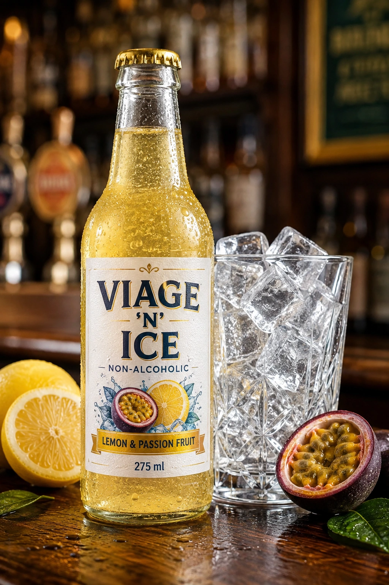
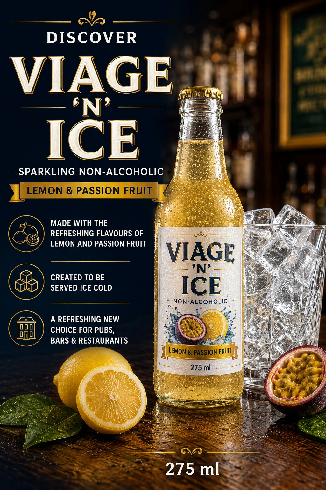

New product created by Brian Mountford
VIAGE ’N’ ICE
LEMON & PASSION FRUIT
A sparkling non-alcoholic drink concept
B.M. Creations · Archive Page 55
A sparkling non-alcoholic drink concept
B.M. Creations · Archive Page 55


Explore more of Brian Mountford’s creations at the Main Entrance.
Return to the Main EntranceUse the arrows, page dots, or keyboard arrows to turn pages.